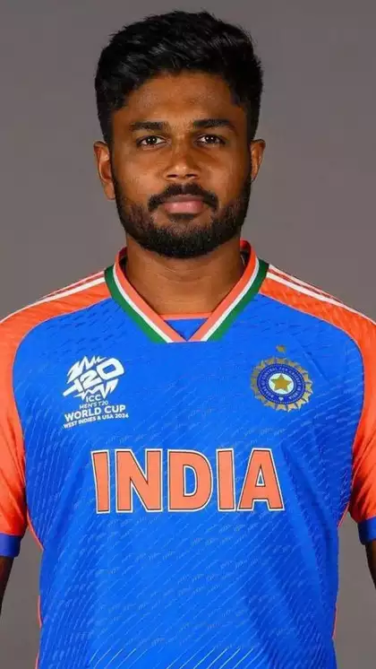

Bold text here
strong text here
This time Olympics games going to held in Italy
emphazised texts here
smller text here
rs5000
Inserted text used to represent range of text
sub script
super scripts
marKING
ABOUT SANJUNSAMSON USING TEXT FORMATTING TAGS

Sanju Viswanath Samson is an Indian international cricketer, who captains Kerala in domestic cricket and Rajasthan Royals in the Indian Premier League. He formerly captained KCA Royals team in the Kerala Premier League. He was a part of the Indian team which won the 2024 T20 World Cup.
Key lines we to LEARN from Him
Sanju Samson, a name that resonates with cricketing excellence! With a bat in hand, he weaves magic on the field, his passion and dedication inspiring a generation of cricketers.
From the streets of Kerala to the international stage, Sanju's journey is a testament to his hard work and perseverance. He embodies the spirit of a true sportsman, always striving for greatness.
Just like Sanju Samson's unbeaten innings, may your determination and grit help you score big in life's challenges!
Sanju Samson's story shows us that with talent, effort, and resilience, we can overcome any hurdle and reach new heights!"
one's Hard work and dedication are the keys to success, both on and off the field.
- SANJU SAMSON